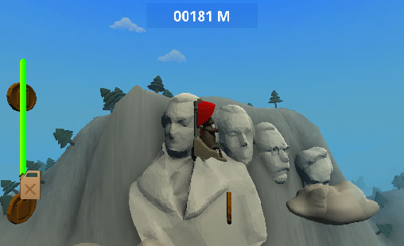
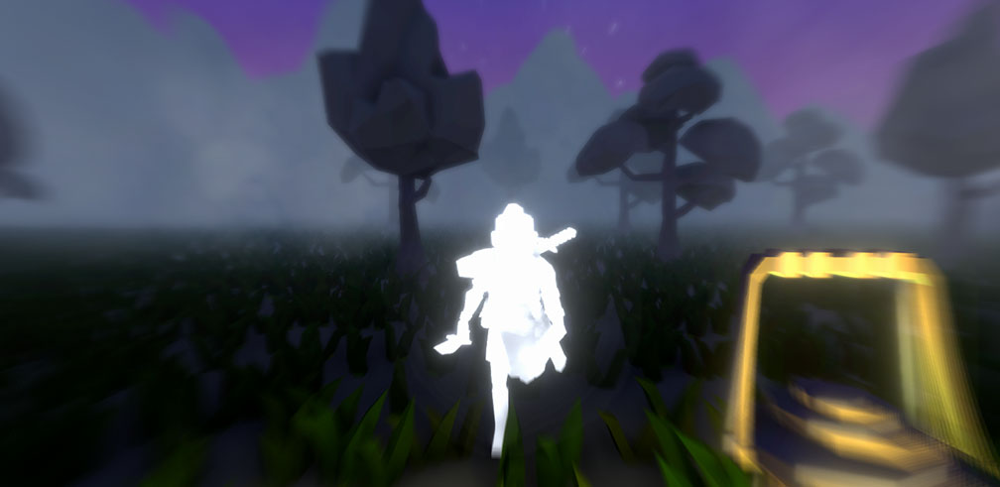

Sobre mí
!Hola! Mi nombre es Edmundo Márquez, un desarrollador de videojuegos independiente con una pasión por codificar
y un entusiasta del diseño de juegos.
He estado desarrollando videojuegos desde 2019 y los he publicado en mi página de Itchio,
también me gusta participar en game jams. Actualmente realizo aplicaciones mediante freelance y mantengo mi sitio web Fragsoft Games!

Recién terminé mis estudios en la Ingeniería en Tecnologías Interactivas en Animación en la
Universidad del Valle de México.
Sin embargo no todo lo que sé lo aprendí en la universidad, estoy constantemente aprendiendo sobre desarrollo de videojuegos
por otros medios para mejorar la calidad de mis proyectos.
Cuando se trata de trabajo y de mi vida personal, me gusta ponerme desafíos, ya sea para aprender nuevas herramientas o para idear
un sistema. No me gusta rendirme fácilmente y siempre me esfuerzo por mejorar cuando cometo errores, pero es algo que disfruto hacer
y le da sentido a mi pasión por los videojuegos.
Mis habilidades
Algunos de los proyectos que he creado o formado parte de.
2021
The Hustler Program

Unity | Tiempo de desarrollo: 1 semana
Juego runner con un medidor de gas que se agota cada vez que el jugador se propulsa. Tiene un sistema para
generar nuevas filas de monedas y enemigos y también IA de patrulla básica para enemigos.
2020
Letters from the Outside

Unity | Tiempo de desarrollo: 48 horas
Juego de rompecabezas donde se envían cartas. Trabajé en un sistema de traducción y una interfaz de arrastrar y soltar que imita una aplicación de escritorio. Hay un temporizador para resolver acertijos y cada letra se cambia día a día.
2020
Unknown Trench

Unreal Engine 4 | Tiempo de desarrollo: 4 meses
Walking Simulator en primera persona donde controlas a un buzo de rescate que busca a su compañero de
tripulación perdido. Trabajé en las secuencias de juego usando Sequencer y también diseñé la persecución del
jefe monstruo y el level streaming.
2019
That Freezing Night

Unity | Tiempo de desarrollo: 48 horas
Juego de aventuras en primera persona. Trabajé con Finite State Machines para la IA del White Warrior y un
sistema de pistas para encontrar objetos, también configuré la iluminación general, la interfaz de usuario y el
posprocesamiento. Se puede completar con dos finales diferentes.
2019
Vampiric

Unreal Engine 4 | Tiempo de desarrollo: 1 semana
Juego de acción y sigilo con un vampiro y su gancho. La inteligencia artificial de los guardias se implementó con el usando
de Behavior Trees con Blueprints, pueden patrullar en un radio aleatorio y quemar al jugador si es visto.